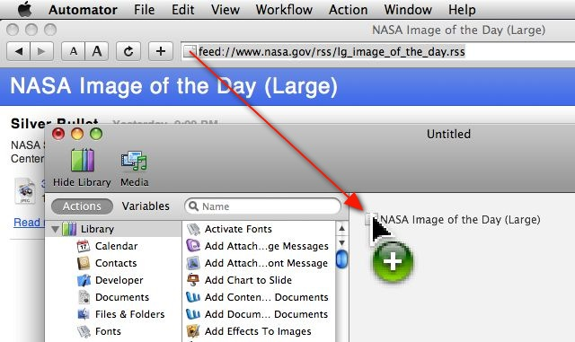
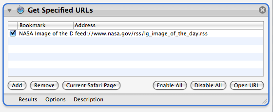

Tutorial 03: Adding the Feed URL to the Workflow
The first step in building the workflow is to add the URL of the NASA Image of the Day photo. Launch Safari, go the NASA RSS Feeds webpage, and click on the link for the Large Image of the Day in the General Interest Feeds section.
Next, launch Automator, select the Custom category in the Starting Points dialog, and position the new workflow window in front of and below the Safari window displaying the Image of the Day feed. Drag the webpage proxy (the icon to the left of the website URL in the browser window) into the workflow area of the Automator document and release (see illustration below).

A new Get Specified URLs action containing the RSS feed URL will be added to the Automator workflow. This URL will be passed as input to the next action when the workflow is run.
